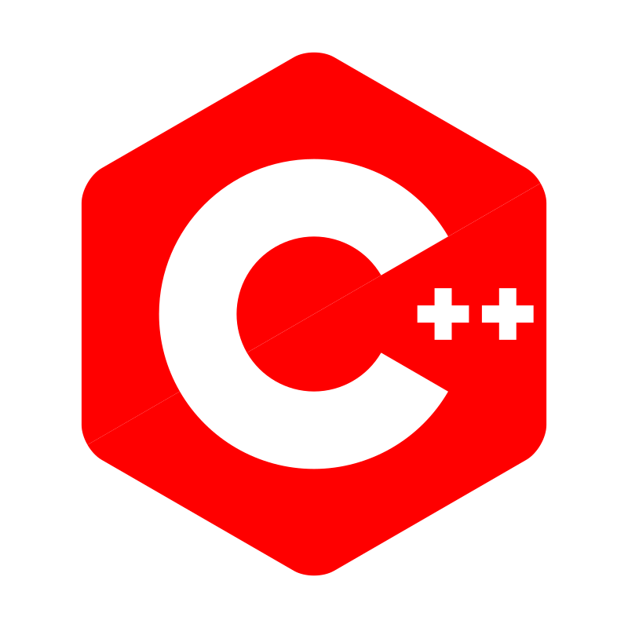
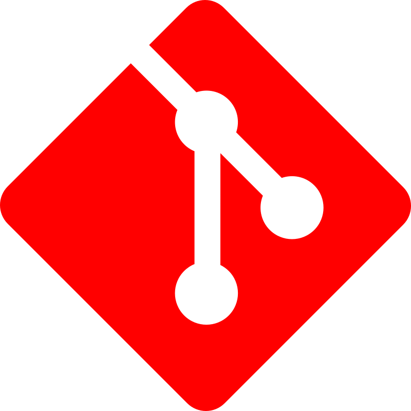

I’m an aspiring Software/Machine Learning Engineering documenting my Journey Publicly. I did my Undergraduate in Electronic Engineering at the University of Southampton and currently I'm doing my Masters in Computer Science at University of Edinburgh. My Intrests lie between the intersection of ML & hardware such as Custom AI accelerators and ML compilers.
See my work Contact me

The first iteration of my personal website written in html and css only. A simply hobby project to bring me into the world of front-end engineering and UX/UI design. No AI assisted Coding used for this project.
A from-scratch C++ machine learning inference engine and compiler-style runtime. TinyInfer loads model weights, executes core neural-network layers, applies graph-level optimisations, and benchmarks performance against PyTorch to explore how production ML inference systems are built under the hood.
Implememted a cycle-accurate 5-stage pipelined CPU with hazard dection unit for forwarding and stalls and 2-bit saturating Branch predictor to reduce control-hazards. Validated on test programs written in MIPS assembly with the limited ISA. Addition of the Branch predictor reduced Average CPI from 1.25. to 1.11 as the number of stalls reduced from 403 to 203 on the showcase program.
Designed a custom Risc-v AI accelerator supporting ML workloads, vector instruction and ReLU extensions for efficient computation. Utilised DSP units on the FPGA to compute different rows of the matrix all in parralel and added runtime INT8 quantisation to reduce the Memory bandwidth bottle neck while maintaining it's precision. Achieved measured speed ups of up to 56.8x on a variety of sparse matrix workloads with different sizes, sparsity levels and patterns. and up to 11.92x speed up over the ARM cortex M0.
This a Group project where i was responsible for design some circuits for a digital clock with provided requirements such as a main sequencer, Button sequencer and Ring Oscillator. EDA tools such as S-edit and L-edit where used to implement the circuit and LVS check were used to confirm not compatibility errors. The GDSII file was sent to TSMC for Fabrication and after returned Custom Test Vectors were created to confirm there was no errors when manufacturing the chip.
This a Group project where i was responsible for designing Standard Network Architecture for both the Application and transport layers of an Embedded device with an RF Transceiver. Design the Byte structure of the payload and it's segments, determining what control functionality we want for the smart lighting application, which ports segments should arrive in and what type of checksum to ensure the segments/packets weren't corrupted.
I always check my messages, Let's talk!